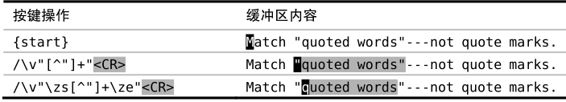

）。元字符\zs标志着一个匹配的起始，而元字符\ze则用来界定匹配的结束。将二者相结合，我们可以定义一个特殊的模式，它们可以让我们定义一个模式匹配一个较大的文本范围，然后再收窄匹配范围。与单词定界符（前一节已介绍过）类似，\zs与\ze均为零宽度元字符。
）。元字符\zs标志着一个匹配的起始，而元字符\ze则用来界定匹配的结束。将二者相结合，我们可以定义一个特殊的模式，它们可以让我们定义一个模式匹配一个较大的文本范围，然后再收窄匹配范围。与单词定界符（前一节已介绍过）类似，\zs与\ze均为零宽度元字符。技巧77界定匹配的边界
有时候，我们可能想指定一个范围较广的模式，但只对匹配结果的一部分感兴趣。Vim中的元字符\zs与\ze可以帮助我们处理这种情况。
直到现在，我们还一直假设查找模式与它们实际产生的匹配是完全一致的，现在到了把它们剥离成两个独立概念的时候了。首先要明确其定义。当我们谈论一个模式的时候，指的是在查找域输入的正则表达式（或者按原义匹配的文本）；而匹配，是指在文档中被高亮显示的文本（假设已经启用'hlsearch'选项）。
一个匹配的边界通常对应于一个模式的起始与结尾。但我们可以使用元字符\zs 与\ze对匹配进行裁剪，使其成为这个完整模式的一个子集（参见:h/\zs）。元字符\zs标志着一个匹配的起始，而元字符\ze则用来界定匹配的结束。将二者相结合，我们可以定义一个特殊的模式，它们可以让我们定义一个模式匹配一个较大的文本范围，然后再收窄匹配范围。与单词定界符（前一节已介绍过）类似，\zs与\ze均为零宽度元字符。
用一个示例可以帮助大家理解这一点。如果我们查找/Practical Vim<CR>，文档中所有出现“Practical Vim”的地方都会被高亮起来。一旦将查找模式改为/Practical \zsVim<CR>，则只有单词“Vim”会被高亮，而单词“Practical”会被排除于匹配之外，但它仍是模式的一部分。这样一来，只有紧跟着单词“Practical”的“Vim”才会被高亮，而其他前面不是“Practical”的“Vim”则不会被匹配。这与通过/Vim<CR>命令进行简单查找的结果有很大不同。
还有另外一个例子，这一次，我们同时使用\zs与\ze对匹配的起始与结尾进行微调。

这个基本模式用到了一个常见的正则表达式惯例"[^"]+"。该模式使用两个引号作为起始与结尾的标记，然后匹配除引号之外的一个或多个字符。在最后一行作为压轴出场的模式中，我们在开引号之后加入了元字符\zs，在闭引号之前加入了元字符\ze。这样一来，引号本身被排除于匹配之外，只剩下引用的内容被高亮起来。
注意：尽管引号被排除在匹配之外，但它们仍然是模式中的关键部分。
环视表达式
从概念上讲，Vim的元字符\zs与\ze类似于Perl的环视断言。尽管Perl 与Vim的正则表达式引擎在语法上有所不同，但从功能上讲，元字符\zs和\ze分别大致相当于肯定型逆序环视和肯定型顺序环视。
正如你可能期望的那样，Perl也提供环视断言的否定型变体。只有当指定的模式不存在时，这些零宽度元字符才会发生匹配。Vim也提供完整的否定型/肯定型顺序环视/逆序环视断言，但我要再一次提醒大家，其语法与Perl的语法有所区别。关于二者逐项对比的情况，请查阅:h perl-patterns(2)。
我们将使用正向环视元字符代替\zs与\ze，重写技巧77中的模式/\v"\zs[^"]+\ze"<CR>，就像这样：
➾/\v"@<=[^"]+"@=
我不知道你是怎么想的，反正我觉得使用\zs与\ze的版本可读性更强。尽管否定型环视表达式被广泛用于一些Vim的语法高亮定义，但在我的日常使用过程中却不多见。相反地，我发现肯定型环视表达式的使用频率会更高，因此，在我看来，它们应该拥有自己的速记标记，即\zs与\ze。